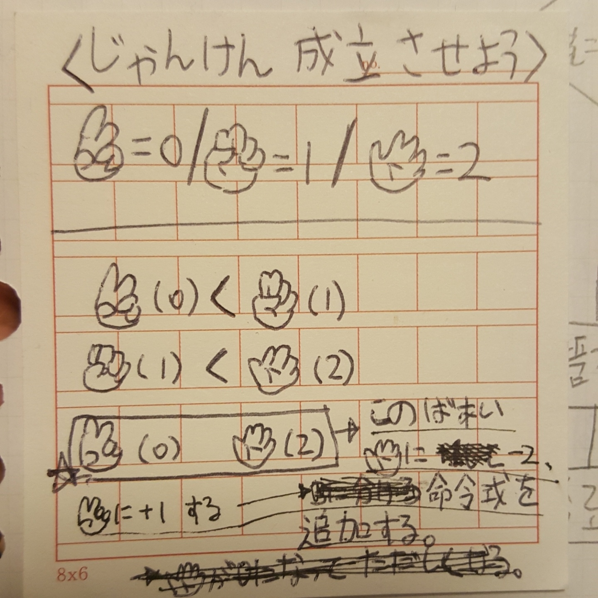
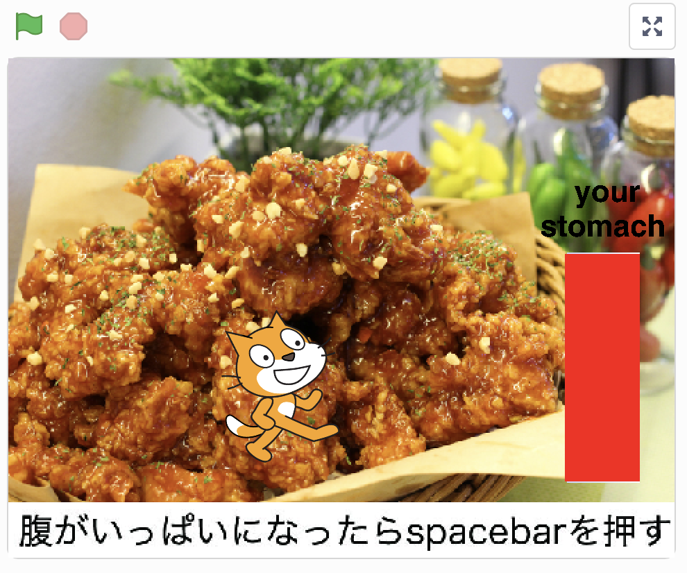

アルゴリズム
「アルゴリズムとは？」
アルゴリズムの動画。フガシギの数え方
簡単にいうと、人間ではない機械のための具体的な順番。
「身の回りのアルゴリズム」
代表的に、じゃんけんがある。
じゃんけんのアルゴリズム

ボックスの前面に穴を開け、透明なアクリルを貼った。
ぐ、チョキ、ぱを数字に設定してアルゴリズム化して見た。
成立するかやって見る。
scratch
大学生活というテーマでscratchを作って見る。私は、学食を食べるのを作った。

こちら： https://scratch.mit.edu/projects/249027516/
失敗、成功とかの結果を知らせるのを作りたかったけど、難しくてそこまでできなかったのが惜しい。